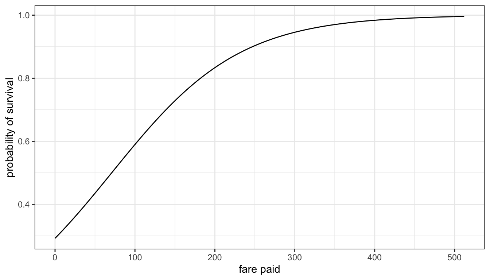
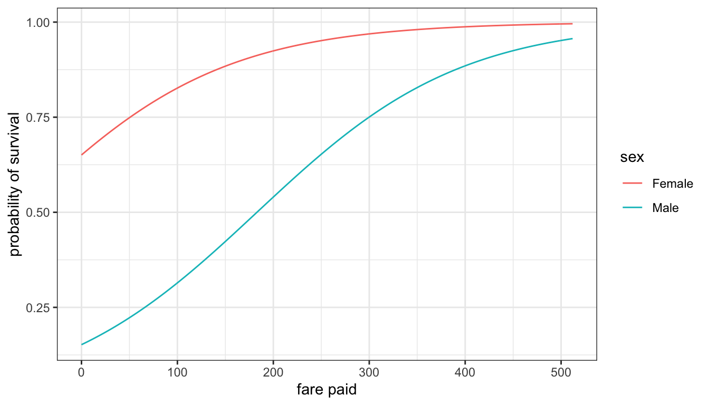

Logit Model
Now that we have developed the logic behind generalized linear models and the maximum likelihood estimation procedure, we can focus more concretely on the GLM we used to predict survival in the previous section. This GLM is the logit model (also called the logistic regression model) and it can be used to predict dichotomous outcomes. Formally:
\[y_i \sim binom(1, \hat{p}_i)\]
\[log(\frac{\hat{p}_i}{1-\hat{p}_i}) = \beta_0+\beta_1x_{i1}+\beta_2x_{i2}+\ldots+\beta_px_{ip}\]
These two functions define the error distribution and link function, respectively. Each outcome \(y_i\) (success or failure) is the result of a binomial distribution with a single trial and an estimated \(\hat{p}_i\) probability of success for the \(i\)th observation. The linear function of the independent variables is related to the log-odds of success, which is a transformation of those \(\hat{p}_i\). We use MLE to then estimate the \(\beta\) values by selecting the \(\beta\) values that produce \(\hat{p}_i\) that maximize the likelihood of actually observing the success and failures \((y_i)\) that we actually have.
Interpreting results
Because of the transformation in the link function, we have to be careful about interpreting the results from our model. We have already seen something like this before in the previous module in which we log-transformed the dependent variable. The effect here is similiar, but is also compounded by the use of odds rather than probabilities in the link function. In short, we have to consider two things:
- We are modeling differences or effects on the odds of success rather than on the probability of success. Because of the non-linear connection between these two concepts, it is no easy matter to go between them. We will take this more up below in a discussion of the “marginal effects” from logit models.
- Because of the natural log in the logit transformation, the actual model we care about is multiplicative rather than additive. In other words, our ultimate interpretations will be about relative change (e.g. 7% lower, twice as large) on the odds of success.
A simple example
Lets try out a simple example. I want to use my new logit model framework to predict survival on the Titanic by gender.
model.gender <- glm((survival=="Survived")~(sex=="Female"),
data=titanic, family=binomial(logit))
round(summary(model.gender)$coef,3)## Estimate Std. Error z value Pr(>|z|)
## (Intercept) -1.444 0.088 -16.476 0
## sex == "Female"TRUE 2.425 0.136 17.832 0My model is given by:
\[log(\frac{\hat{p}_i}{1-\hat{p}_i}) = -1.444+2.425(female_i)\]
But what do the values for the intercept and the slope really mean? These are literally given me predicted changes in the log odds of survival, but log odds is not very intuitive. Lets use our usual trick of exponentiating both sides to convert the left-hand side to and odds.
\[\begin{align*} e^{log(\frac{\hat{p}_i}{1-\hat{p}_i})} & = e^{-1.444+2.425(female_i)}\\ \frac{\hat{p}_i}{1-\hat{p}_i} &= (e^{-1.444})(e^{2.425(female_i)})\\ \frac{\hat{p}_i}{1-\hat{p}_i} &= (0.236)(11.30)^{(female_i)} \end{align*}\]
As you can see, this equation became a multiplicative equation rather than an additive equation, just as it did for log-transformed quantitative variables in the previous module. In this case, we can figure out what these numbers mean very easily by plugging in values for \(female_i\) for our two cases. For men, \(female_i=0\), so:
\[\frac{\hat{p}_i}{1-\hat{p}_i} = (0.236)(11.30)^{0}=0.236(1)=0.236\]
So the exponential of the intercept value \((e^{-1.444}=0.236)\) gives us the odds of survival for men. This value is often called the baseline odds and represents the odds of success for an observation when all values of the independent variable are zero.
For women, \(female_i=1\), so:
\[\frac{\hat{p}_i}{1-\hat{p}_i} = (0.236)(11.30)^{1}=0.236(11.30)\]
We could work out the final number here, but this formulation is more important because it gives us the odds ratio of 11.3. This is the value we multiply the baseline odds by in order to get the odds for women. In this case, we can see that women had odds of surviving the Titanic that were 11.3 times higher than men’s odds. In general the exponential of the slopes gives us an odds ratio, although interpreting it correctly depends on whether you have a categorical or quantitative independent variable.
Before discussing the quantitative case, lets revisit a method we already knew for calculating this odds ratio. We can do this by a two-way table.
##
## Survived Died
## Female 339 127
## Male 161 682The odds of survival for men are given by the number of survivals over the number of deaths:
## [1] 0.2360704You can see that this number matches the baseline odds we just calculated from the logit model. We can also calculate the odds ratio by taking the cross-product of the table:
## [1] 11.30718The odds ratio between men and women is the same as what we just estimated from the logit model. The logit model and the two-way table both agree on the relevant odds and odds ratios. So why use the logit model? The logit model will allow us to estimate much more complex models by including quantitative variables, controlling for other variables, adding interaction terms, non-linear effects, and all of the other fun techniques we have been developing for the right-hand side of a linear function. Before turning to a more complex model, lets look at how to interpret logit models with a quantitative independent variable.
Interpreting results with quantitative independent variables
Lets return to the example of predicting survival by fare paid:
model.fare <- glm((survival=="Survived")~fare,
data=titanic, family=binomial(logit))
coef(model.fare)## (Intercept) fare
## -0.88402354 0.01247006So our model is:
\[log(\frac{\hat{p}_i}{1-\hat{p}_i}) = -0.884+0.012(fare_i)\]
We can follow the same process as before and convert this to the odds scale by exponentiating both sides:
\[\begin{align*} e^{log(\frac{\hat{p}_i}{1-\hat{p}_i})} & = e^{-0.884+0.012(fare_i)}\\ \frac{\hat{p}_i}{1-\hat{p}_i} &= (e^{-0.884})(e^{0.012(fare_i)})\\ \frac{\hat{p}_i}{1-\hat{p}_i} &= (0.413)(1.012)^{(fare_i)} \end{align*}\]
Again we have a multiplicative model. To see how we can interpret this multiplicative effect, lets consider the predicted odds for three passengers who respectivly paid 0,1, and 2 pound(s) in fare:
\[\begin{align*} \frac{\hat{p}_i}{1-\hat{p}_i}&=(0.413)(1.012)^{0}=0.413\\ \frac{\hat{p}_i}{1-\hat{p}_i}&=(0.413)(1.012)^{1}=0.413(1.012)\\ \frac{\hat{p}_i}{1-\hat{p}_i}&=(0.413)(1.012)^{2}=0.413(1.012)(1.012)\\ \end{align*}\]
Each time we increase a pound in fare, we multiply the odds we had before by 1.012. In other words, the odds increase by 1.2% for every one pount increase in fare. So, for a quantitative variable, we can also talk about the percentage or multiplicative change in the odds, but this time for a one unit increase in \(x\) rather than comparing a one category to a reference category.
Also note that because our slope of 0.012 was small, the exponential of this value followed the approximation of \(e^x\approx1+x\), and was simply 1.012. Therefore, in this case, we could have just looked directly at the log odds ratio of 0.012 and concluded that every one pound increase in fare paid is associated with a 1.2% increase in the odds of survival.
Graphing predicted probabilities
We can look at how fare changes the predicted probability of survival by using the predict command. In this case, we will feed in a fake dataset of passengers paying every fare between 0 and 512 (the maximum actual value) in one unit increments. We just have to remember that the predicted values from predict will be log-odds which need to be converted to probabilities.
predict_df <- data.frame(fare=0:512)
lodds <- predict(model.fare, newdata=predict_df)
predict_df$probs <- exp(lodds)/(1+exp(lodds))
ggplot(predict_df,
aes(x=fare, y=probs))+
geom_line()+
labs(x="fare paid", y="probability of survival")+
theme_bw()
We could also plot a more complicated example for a model that looks at both gender and fare. The trick here is we can use a handy function called expand.grid to set up our prediction dataframe. The expand.grid function will create a dataframe that includes an observation for every possible combination of the variables that you feed in.
model.both <- update(model.fare, .~.+sex)
predict_df <- expand.grid(fare=0:512, sex=c("Female","Male"))
lodds <- predict(model.both, newdata=predict_df)
predict_df$probs <- exp(lodds)/(1+exp(lodds))
ggplot(predict_df,
aes(x=fare, y=probs, color=sex))+
geom_line()+
labs(x="fare paid", y="probability of survival")+
theme_bw()
A more complex example
Now lets try a more complex example that can take advantage of several of the features of linear models we have already developed.
model.smoking <- glm(smoker~I(pseudoGPA-2)+I(grade-10)+I((grade-10)^2)+sex*honorsociety,
data=popularity, family=binomial(logit))
round(summary(model.smoking)$coef, 3)## Estimate Std. Error z value Pr(>|z|)
## (Intercept) -1.086 0.086 -12.697 0.000
## I(pseudoGPA - 2) -0.631 0.062 -10.173 0.000
## I(grade - 10) 0.299 0.030 9.914 0.000
## I((grade - 10)^2) -0.013 0.019 -0.715 0.475
## sex Male -0.133 0.091 -1.471 0.141
## honorsocietyTRUE -0.741 0.265 -2.801 0.005
## sex Male:honorsocietyTRUE 0.845 0.372 2.272 0.023What all am I doing in this model. I am predicting whether an adolescent is a frequent smoker by:
- GPA in school. I have centered this on a C average.
- Grade (e.g. 8th, 9th) in school. I have centered this on 10th grade and allowed for a non-linear trend by including a polynomial squared term.
- gender and honor society membership. I have interacted these two variables so that honor society can have a different effect for boys and girls.
In order to interpret the results, I need to exponentiate my coefficients:
## (Intercept) I(pseudoGPA - 2) I(grade - 10)
## 0.3376500 0.5321197 1.3490978
## I((grade - 10)^2) sex Male honorsocietyTRUE
## 0.9867364 0.8752565 0.4765042
## sex Male:honorsocietyTRUE
## 2.3275203The baseline odds of frequent smoking for a 10th grade girl who earned a C average and is not a member of honor society is about 0.34. So roughly, I expect to see 3 non-frequent smokers for every frequent smokers among this group.
Holding constant gender, grade in school, and honor society membership, each letter grade increase in GPA is associated with nearly a halving (47% decline) in the odds of frequent smoking.
The grade effects are a little harder to directly interpret because of the squared term applied in a multiplicative fashion. The basic trend is that increases in grade are associated with fairly large increases in the odds of frequent smoking. The negative effect on the squared term suggests a slightly diminishing effect at higher grade levels, but this is not statistically significant, so we are probably better off estimating a model without the squared term.
To see how this complex age effect works, its probably easiest to calculate odds ratios at each of the grades from 7th through 12th:
## [1] 1.439074 1.402141 1.366155 1.331092 1.296930We can see that the biggest odds ratio increase is from 7th to 8th grade at 43.9% and the smallest estimated odds ratio increase is from 11th to 12th at 29.6%. Although the magnitudes vary in size, the risk of smoking increases substantially in size with increases in grade at all grade levels.
The effects of gender and honor society are also somewhat more complex to interpret because of the interaction term. The main effects give us the effect when the other variable is held at the reference. So, among students who are not in honor society, and controlling for grade and GPA, boys have 12.5% lower odds \((100*(1-0.875))\) of frequently smoking than girls. Among girls, honor society membership reduces the odds of smoking by about 52% \((100*(1-0.48))\).
To interpret the interaction term, lets go ahead and calculate the honor society effect for boys:
## [1] 1.1096Among boys, those in honor society have 11% higher odds of smoking frequently than those not in honor society. So we see a very different effect of honor society here by gender.
Notice that I could have gotten this same value by multiplying the exponentiated values of the main effect and interaction term:
## [1] 1.109073Marginal effects
The coefficients of the logit model give the marginal effect on the log-odds of success, but we rarely want this value. Exponentiated coefficients will give the odds ratio of success for a one unit increase in \(x\) for all values of \(x\). Often times, however, what people really want when they refer to the “marginal effects” in a logit model is the marginal effect of \(x\) on the probability.
Before proceeding with such a calculation, it is worth pausing for thought here. We converted to the odds scale because of the fundamental problem of probabilities being bound between zero and one. Because of this, the effect of an independent variable must be smaller when we are close to this bounds. This has the unfortunate effect of mixing up “intecept effects” with relationships between variables when we focus on probabilities. An “intercept effect” is something that affects all the cases and raises or lowers their probability of success. For example, the Costa Concordia sinking off the coast of Italy had a much lower death rate than the Titanic for a variety of reasons (e.g. modern safeguards, temperature of the water, proximity to shore). Thes factors raised everyone’s probability of surviving much higher, such that differences between passengers by gender had to be smaller. However, we should not conclude from this that the smaller difference between men and women’s survival was driven by anything to do with gender itself, but rather to the ceiling effect of approaching 100% survival. The odds and odds ratio gets us away from this problem, by removing the “intercept effect” from our estimates of the effect of a given independent variable on the outcome. We can directly compare the odds of survival by gender between the Titanic and Costa Concordia, but not the probabilities.
Nonetheless, recently many academics have become convinced that the only proper way to report parameters from a logit model is to convert them to marginal effects on the probabilities. I am not a fan of this Logit Panic, but I do think its worthwhile for you to know how to do this procedure. For more information on why I think concerns about the logit model are misplaced, see this excellent article.
The first problem with calculating marginal effects on the probabilities is the question of where you want to calculate them. Because the relationship between the log-odds and probabilities is a curve (the logic curve, to be precise), the marginal effects vary depending on the predicted probability of success, \(\hat{p}_i\) for a given \(x\) or vector of \(X\) in the case of multiple independent variables.
Lets take the example of the effect of fare paid on surviving the Titanic. Figure @(fig:plot-marginal) below shows three different marginal effects at fares of 50, 200, and 500 pounds. These marginal effects are given by the tangent line to the curve at each of these values of fare. The tangent line is the line that just “kisses” the curve at each value of fare, and gives us the slope of the curve at that exact moment. We can see that the steepness of the curve changes. As fare increases, the probability of surviving also increases and thus the marginal effect of fare decreases because we are approaching one.
Figure 100: Different marginal effects of a one pound increase in fare paid at fares of 50, 200, and 500 pounds. Marginal effects are given by the tangent line to the curve at a given value of fare.
To calculate the marginal effect of a given variable \(k\) with a coefficient of \(\beta_k\), you just need to use the formula:
\[\hat{p}(1-\hat{p})\beta_k\]
where \(\hat{p}\) is the predicted probability of success for a given set of values for the independent variables. We can calculate that value by using our formula to get predicted probabilities for a given vector \(X\) of values:
\[\hat{p}=\frac{e^\mathbf{x'\beta}}{1+e^{\mathbf{x'\beta}}}\]
For example, lets calculate the marginal effect of paying an additional pound of fare when we are currently paying fifty pounds. Our model of survival by fare paid is given by:
\[log(\frac{\hat{p}_i}{1-\hat{p}_i}) = -0.884+0.012(fare_i)\]
First, we plug in 50 for fare to get our predicted log-odds of survival:
\[-0.884+0.012*50=-0.284\]
Now we convert from log-odds to probabilities:
\[\hat{p}=\frac{e^{-0.284}}{1+e^{-0.284}}=0.429\]
We can now calculate the marginal effect:
\[\hat{p}(1-\hat{p})\beta_k=0.429(1-0.429)0.012=0.0029\]
So, an increase in fare paid from fifty to fifty-one pounds is associated with an increase in the probability of survival of 0.29%.
We can also do this with models that have more than one variable, but now we will have to estimate a \(\hat{p}\) for values of more than one variable. The standard approach in these cases is to estimate the marginal effects on ther probability when at the mean for all independent variables. Lets try it out for a model that uses both fare and age to predict survival.
model <- glm((survival=="Survived")~fare+age, data=titanic,
family=binomial(logit))
#get predicted probabilty at mean fare and age
df <- data.frame(fare=mean(titanic$fare), age=mean(titanic$age))
lodds <- predict(model, df)
p <- exp(lodds)/(1+exp(lodds))
#get marginal effects
p*(1-p)*coef(model)[c("fare","age")]## fare age
## 0.003197334 -0.003233789So, holding age at the mean, a one pound increase in fare from the mean is associated with an increase in the the probability of survival of 0.32%. Holding fare at the mean, a one year increase in age is associated with a decrease in the probability of survival of 0.32%. Coincidentally, the marginal effects of fare and age at the mean are about the same but in opposite directions.
For categorical variables, the marginal effect on the probability is simply given by the difference in probability between the indicated and reference category. Lets add gender to our model and estimate its marginal effect on the probability.
titanic$female <- as.numeric(titanic$sex=="Female")
model <- glm(survival~fare+age+female, data=titanic,
family=binomial(logit))
df <- data.frame(fare=rep(mean(titanic$fare),2),
age =rep(mean(titanic$age),2),
female=c(0, 1))
lodds <- predict(model, df)
p <- exp(lodds)/(1+exp(lodds))
p## 1 2
## 0.8025075 0.2841702## 2
## -0.5183373Men had a 52% lower probability of surviving the Titanic than women, holding fare and age at the mean values.
How do we calculate the marginal effects for fare and age in this last model. Gender is categorical and therefore we can’t just take the mean. Or can we? You may have noticed that I created a new variable called female coded directly as a 0/1 dummy variable. The mean of this variable is the proportion female on the Titanic. Although it would seem odd to do so, I can use this mean to get a predicted value for the probability mathematically. The result just tells me the expected log-odds/probabilities among a set of passengers where the proportion female equals that for the whole dataset. I can then use this approach to calculate the marginal effects for my quantitative variables.
df <- data.frame(fare=mean(titanic$fare), age=mean(titanic$age),
female=mean(titanic$female))
lodds <- predict(model, df)
p <- exp(lodds)/(1+exp(lodds))
p*(1-p)*coef(model)[c("fare","age")]## fare age
## -0.002310890 0.002089346If you don’t want to go through the hard work of calculating these marginal effects by hand, you are in luck. The mfx library has a command called logitmfx. This command will run a logit model and report back the marginal effects on the probability.
## Call:
## logitmfx(formula = survival ~ fare + age + sex, data = titanic)
##
## Marginal Effects:
## dF/dx Std. Err. z P>|z|
## fare -0.00231089 0.00039964 -5.7824 7.365e-09 ***
## age 0.00208935 0.00115590 1.8075 0.07068 .
## sex2 0.51833735 0.02577096 20.1132 < 2.2e-16 ***
## ---
## Signif. codes: 0 '***' 0.001 '**' 0.01 '*' 0.05 '.' 0.1 ' ' 1
##
## dF/dx is for discrete change for the following variables:
##
## [1] "sex2"Notice that this function also reports back inferential statistics in addition to the marginal effects themselves.
The probit link
The logit link is the most common link used for generalized linear models with dichotomous outcomes. However, another link option is the probit link. Formally the probit link is the inverse of the cumulative normal distribution, but its ok if that doesn’t make a lot of sense to you.
Just imagine that you had a standard normal distribution with a mean of zero and standard deviation of one. The cumulative normal distribution gives us the density (proportion of the area) of that standard normal distribution for a given value. So imagine you put in a value of one. A value of one would correspond to being one standard deviation above the mean.
Figure 101: Standard normal distribution with area to the right of one standard deviation above the mean shaded.
Figure 101 shows what that area is in the shaded region. 84% of the area of a standard normal distribution is below that one standard deviation mark. The inverse cumulative normal distribution just reverses which number we are asking about. Instead of feeding in “+1 SD” to get 0.84, I feed in 0.84 to get “+1 SD.” The idea is that we can represent any given probability as an abstract score on a continuous distribution that ranges from negative infinity to infinity. So, just like the logit transformation. the probit transformation stretches the probability across the full number line.
To use a probit model, just replace the logit link with the probit link in your glm command:
model.probit <- glm((survival=="Survived")~fare, data=titanic,
family=binomial(probit))
summary(model.probit)$coef## Estimate Std. Error z value Pr(>|z|)
## (Intercept) -0.538440000 0.0452344872 -11.903307 1.137481e-32
## fare 0.007202863 0.0009081451 7.931401 2.166876e-15The downside of the probit model is that the results are much more difficult to interpret. The direction of the effect can be determined, but the magnitude is often difficult to gauge. For this reason, the logit model is usually preferred.
The two link functions usually produce very similar results. Figure 102 compares the probabilty fit of the two types of models when predicting survival by fare paired. The results are nearly identical.
Figure 102: Predicted probabilities of survival on the Titanic by fare paid using a logit and a probit model